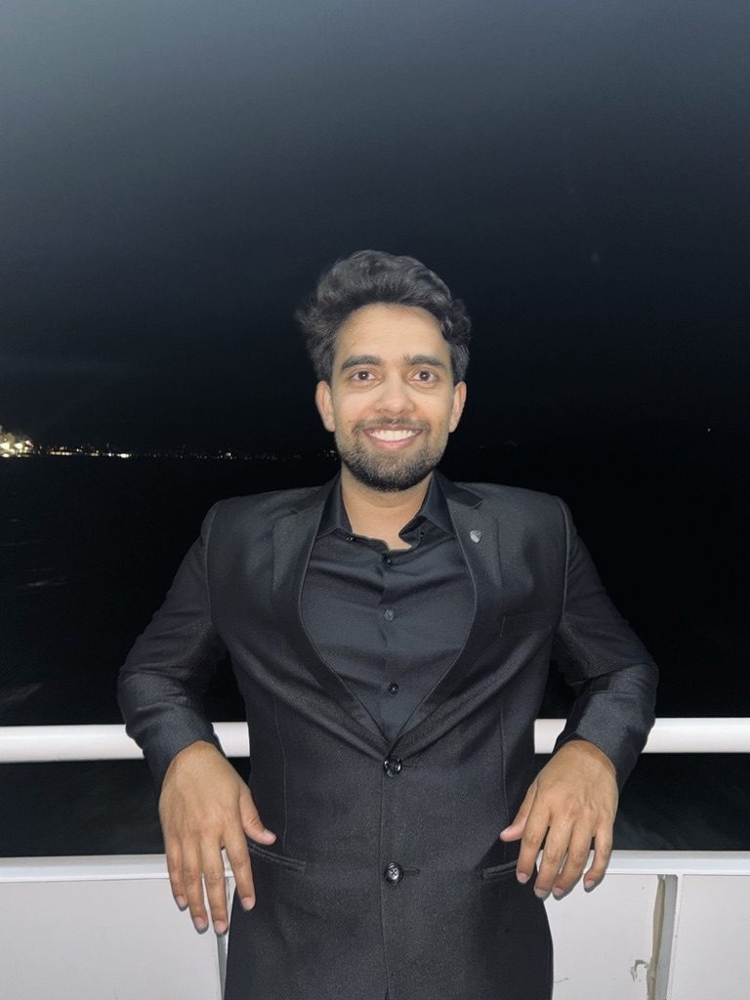

Teaching
I teach AP Computer Science A, AP Cybersecurity, and Honors Robotics. I also built an advanced cybersecurity course from UC Berkeley's CS 161 and rescoped it for high school.
Teaching detailsSan Jose, CA · Applying to PhD programs in CS education
I'm a computer science teacher and the Director of Robotics at Stratford Preparatory Blackford. I'm applying to PhD programs to study how students learn computing, from AI literacy and cybersecurity to competition robotics.

What I do
I teach AP Computer Science A, AP Cybersecurity, and Honors Robotics. I also built an advanced cybersecurity course from UC Berkeley's CS 161 and rescoped it for high school.
Teaching detailsI direct four FIRST teams: a varsity FRC team and three FTC teams. We compete all year, including off-season events, and I coordinate the mechanical, electronics, software, design, and business sub-teams.
The robotics programI advise the Cybersecurity Club and coach students through capture-the-flag contests like PicoCTF. In my free time I solve cryptography challenges and write CTFs of my own.
Security and CTFsResearch interests
Beyond the classroom
I'm happy to hear from faculty, fellow educators, coaches, and students.